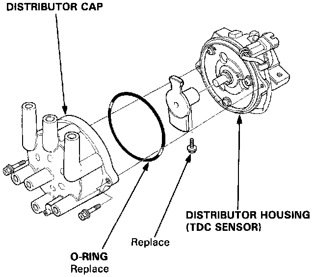
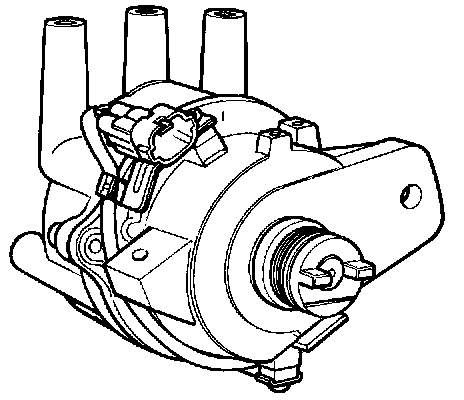

TDC Sensor
TDC Sensor Replacement (Coupe Only)Removal:
1. Remove the distributor.

2. Remove the distributor cap from the distributor housing (TDC sensor).
Installation:
1. Install a new O-ring.

2. Install the distributor cap to the distributor housing (TDC sensor).
3. Install the distributor to the cylinder head.